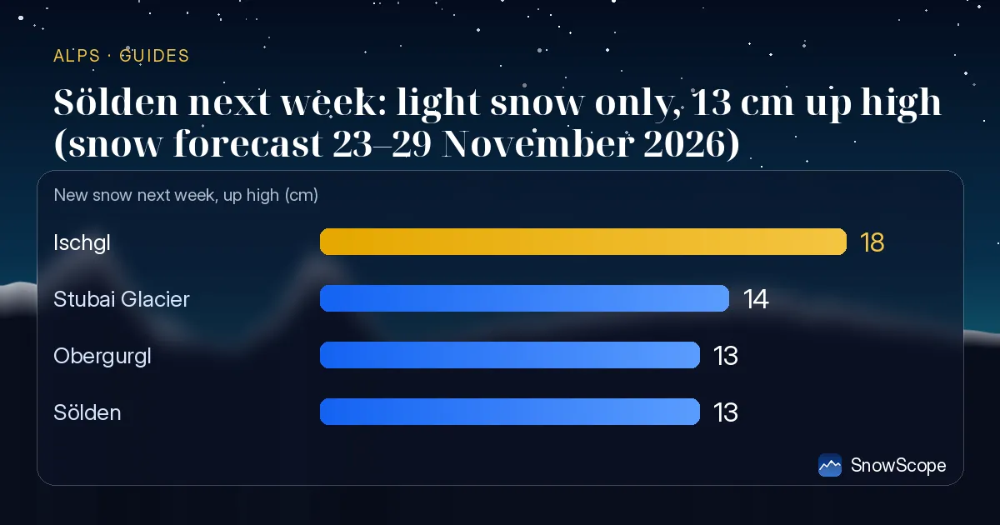
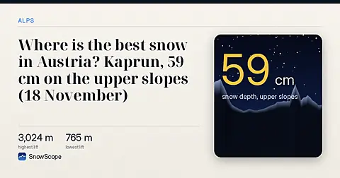
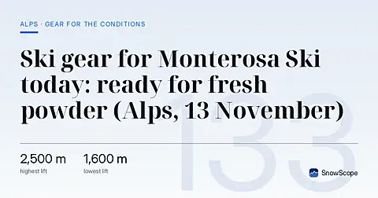

Sölden next week: light snow only, 13 cm up high (snow forecast 23–29 November 2026)
Next week Sölden receives modest snow spread across the valley's height bands: 13 cm near the top at 3100 m, 12 cm at mid-mountain around 2300 m, and 8 cm down near the base at 1400 m. The heaviest single day falls on Thursday 26 November, when the upper slopes gain about 5 cm in the middle of our forecast.
See the live snow forecast for Sölden in the SnowScope appSnow depth, powder alerts and the 3D map, free.

How much snow arrives where
The week of 23–29 November splits into three layers by altitude. Upper slopes near 3100 m collect 13 cm total (ranging from 2 cm to 24 cm depending on storm placement). Mid-mountain at 2300 m gets 12 cm (ranging 2 to 22 cm). The base zone at 1400 m receives 8 cm (ranging 1 to 15 cm).
This spread—especially the wide range at altitude—reflects real uncertainty a week out. A storm track just north or south of the Ötztal changes what Sölden sees by several centimetres.
The first part of the week is thin
Before next weekend arrives, snow is sparse. From Tuesday 17 through Friday 20 November, the top slopes gather only 10 cm. That is enough to dust the high terrain but not to rebuild depth after a mild autumn.
Most of this fortnight's snow waits in the second half of the week. If you plan an early-season visit, the period around 26 November is when conditions improve most.
Thursday 26 November stands out
One day dominates next week's forecast. On Thursday 26 November, the upper slopes gain about 5 cm in the middle of our forecast (up to 9 cm in the best case, as little as 1 cm in the worst). That is a fresh coat on groomed runs but not a powder day.
Wednesday 25 and Sunday 29 also bring snow, each adding roughly 2 cm at the summit. Wednesday's snow may fall as rain lower down if a mild spell sneaks through; Sunday's is more likely to stay frozen across all heights.
Why the base lags far behind
Half-and-half at 1400 m: 8 cm total is a fair amount for early November, but the contrast with the top's 13 cm is stark. That difference matters because Sölden's base sits low enough that warm air can turn new snow wet and heavy.
The glaciers and upper slopes of Gaislachkogl stay colder longer. The Rettenbach and Tiefenbach glaciers, where Sölden opens in autumn, are your safest bet for preserving whatever falls as dry snow.
How this week compares nearby
Obergurgl (10 km away) sits at 13 cm top-slope total, identical to Sölden. Stubai Glacier (12 km away) is marginally higher at 14 cm. Ischgl (49 km away) edges ahead at 18 cm. The differences are small—this is a regional pattern, not a Sölden-specific event.
On snow alone, they are nearly level. The choice between them hinges on the terrain and crowds you prefer.
Reading the uncertainty
A week away, the forecast range is wide: 2 to 24 cm at the top. That spread means the storm could miss Sölden or sit directly over it. The lowest-end scenario leaves just dust on the groomers; the highest would be a skiable addition to base depth.
Storm timing solidifies first; totals tend to shift right up to 48 hours before. Wednesday's update will carry more weight than today's.
Tips for skiers
- Go high: the glaciers and Gaislachkogl's upper slopes hold the best snow preservation. At 1400 m, mild spells can turn new powder sticky and slow.
- Thursday 26 November is the day to ski fresh snow if you can. Wednesday may carry rain risk low down, and Sunday brings snow but arrives later in the week.
- With 13 cm at the top, this is a grooming week, not a backcountry week. Off the groomed runs, check the regional avalanche bulletin of the province before you go.
- Confirm the resort's opening date and lift status: snow on the mountain does not mean the lifts are running.
- Pack layers: early-season snow can be sticky. The difference between 1400 m and 3100 m is both altitude and air temperature.
About these numbers
Resort snow depths are the deepest snow on the resort's upper slopes on the date shown; they are estimates for an area, not a measurement at one point. Forecasts can change. Always read the official avalanche bulletin before going off-piste.
Cite this report
For research, teaching or the press: the numbers and charts are free to reuse under CC BY 4.0 with this citation.
SnowScope (2026), Sölden next week: light snow only, 13 cm up high (snow forecast 23–29 November 2026), https://snowscope.app/blog/en/2026/11/soelden-snow-forecast-next-week-23-29-november-2026.html, accessed 2026-11-16
SnowScope (Atlas Labs). (2026, November 16). Sölden next week: light snow only, 13 cm up high (snow forecast 23–29 November 2026). SnowScope snow reports. https://snowscope.app/blog/en/2026/11/soelden-snow-forecast-next-week-23-29-november-2026.html
BibTeX
@misc{snowscope2026soeldensnowforecastnextw,
author = {{SnowScope (Atlas Labs)}},
title = {Sölden next week: light snow only, 13 cm up high (snow forecast 23–29 November 2026)},
year = {2026},
month = nov,
howpublished = {\url{https://snowscope.app/blog/en/2026/11/soelden-snow-forecast-next-week-23-29-november-2026.html}},
note = {Published 2026-11-16 11:41 UTC; accessed 2026-11-16}
}· CC BY 4.0 · Methods, data and tools →
Sölden: snow and temperature by height, this winter vs last (tools) →
Follow Sölden
Free: a message when fresh snow is coming, and the forecast every morning.
More snow reports

Chamonix starts December with 27 cm at the top but thin snow below. Warmth and wet push against each other; expect near-normal December snow. Data from 10 Nov 2026.

Snow in Austria on 18 November: snow depth on the upper slopes, fresh snow, the next three days and the pick for a short trip.

What to wear, what to pack and when to ski, resort by resort. Packing advice comes with …